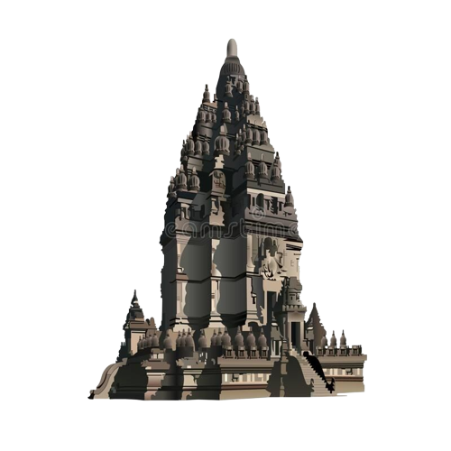
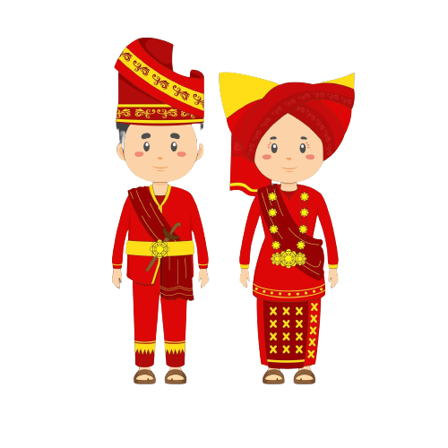

Kumpulan Cerita Rakyat
Kisah Roro Jonggrang

Cerita ini mengisahkan cinta seorang pangeran kepada seorang putri yang berakhir dengan dikutuknya sang putri akibat tipu muslihat yang dilakukannya.
Asal Usul Danau Toba
Legenda Danau Toba mengisahkan seorang pemuda bernama Toba, yang menikah dengan seorang gadis cantik jelmaan seekor ikan.
Malin Kundang

Malin Kundang adalah cerita rakyat yang berasal dari provinsi Sumatra Barat, Indonesia. Legenda Malin Kundang berkisah tentang seorang anak yang durhaka pada ibunya dan karena itu dikutuk menjadi batu.